引言
我们在这一章将为游戏编写不同的屏幕(界面)和对话框.
下面是我们本系列教程的文章目录:
- Flutter 游戏开发(flame) Flame介绍
- Flutter 游戏开发(flame) 01 开发2D休闲游戏：消灭小飞蝇(1/5)
- Flutter 游戏开发(flame) 02 图形和动画(2/5)
- Flutter 游戏开发(flame) 03 界面和弹窗(3/5) 本章
- Flutter 游戏开发(flame) 04 分数, 存档和音效(4/5)
- Flutter 游戏开发(flame) 05 收尾和打包(5/5)
需具备的条件
- 本系列教程之前的全部要求👈
- 更多的资源包 - 本教程提供了资源包, 但你也可以使用自己的. 推荐资源网站Open Game Art .
我们将使用与前一部分相同的编码规范👩🏫
如果你还没有阅读以前的部分, 你最好回顾下! 从第一章 开始.
新资源包
我们将使用此资源包, 其中包含游戏所需的第二组图片资源.
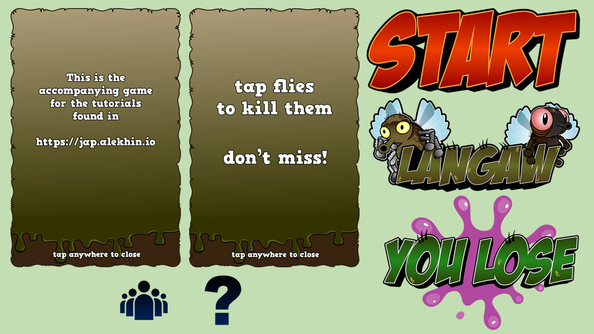
🔴 注意: 如果你遵循本教程, 则可以使用上述资源包. 本资源包是Github上Langaw(原作者)
项目的一部分, 该项目获得CC-BY-NC-ND许可证的许可.
这意味着您可以共享、复制或者重新分发资源.
- 你必须在感谢中提到, 提供许可证的链接, 并标明你是否进行了更改.
- 你不得将资源用于商业目的.
- 如果混合, 转换或者构建资源, 则不能分发修改后的资源.
- 你不得应用法律条款或技术措施, 在法律上限制他人做许可证允许的任何事情.
阿航在这里提醒: 目前国内的版权保护做的不够好. 希望大家能够保护资源原作者辛苦的创作🙏🙏! 不能使用未经许可且无版权的资源, 向盗版说不👋!
开始
本系列教程的终章 将会完成一个具有互动性、良好的图形和动画的游戏.
现在是"勉强能玩", 我们还需要给用户提供更熟悉的游戏体验.
我们将新添加游戏的标志和图形 设置欢迎屏幕, 修改生成逻辑, 最后设置对话框, 显示"游戏指南"和致谢.
第一步: 新的图像资源
下载上面资源包, 放入./assets/images.
我们需要7张图片:
| 图片名称 | 推荐纵横比 | 区块数 |
|---|---|---|
| 游戏品牌标题 | 7:4 | 7 × 4 |
| 开始按钮 | 2:1 | 6 × 3 |
| “游戏失败"涂鸦 | 7:5 | 7 × 5 |
| “得分"对话框 | 3:2 | 12 × 8 |
| “帮助"对话框 | 3:2 | 12 × 8 |
| “得分"图标 | 1:1 | 1 × 1 |
| “帮助"图标 | 1:1 | 1 × 1 |
🟡 提示: 我们的游戏宽度为
9个区块, 动态的高度取决于玩家的手机屏幕纵横比. 如果你想了解更多, 请回顾此章节 .
需要添加的资源如下:
./assets/images/bg/lose-splash.png
./assets/images/branding
./assets/images/branding/title.png
./assets/images/ui
./assets/images/ui/dialog-credits.png
./assets/images/ui/dialog-help.png
./assets/images/ui/icon-credits.png
./assets/images/ui/icon-help.png
./assets/images/ui/start-button.png
与上一章类似, 我们需要通知Flutter在打包时添加这些资源文件.在./pubspec.yaml中的assets中添加:
- assets/images/bg/lose-splash.png
- assets/images/branding/title.png
- assets/images/ui/dialog-credits.png
- assets/images/ui/dialog-help.png
- assets/images/ui/icon-credits.png
- assets/images/ui/icon-help.png
- assets/images/ui/start-button.png
🟡 提示: 注意
./pubspec.yaml文件中的缩进哦!🕵️♂️
现在来预加载这些资源文件, 打开./lib/main.dart, 添加以下行在Flame.images.loadAll中, 加在之前预加载的后面:
'bg/lose-splash.png',
'branding/title.png',
'ui/dialog-credits.png',
'ui/dialog-help.png',
'ui/icon-credits.png',
'ui/icon-help.png',
'ui/start-button.png',
第二步: 界面
一个良好的游戏至少需要一个欢迎界面以及游戏界面. 在玩了一段时间后(输与赢)提供一个过渡界面比较好.
玩家应该能够识别出当前屏幕或者界面是干嘛的, 为用户提供引导. 在我们的游戏中, 打小飞蝇之前应该先按下开始按钮.
准备游戏界面
| 界面名称 | 说明 |
|---|---|
| home(主界面/欢迎界面) | 在首次打开游戏时显示, 它将在屏幕中央显示标题. |
| playing(游戏中) | 玩家在游戏中显示的界面. 将隐藏游戏标题并开始生成小飞蝇. |
| you lost(游戏结束) | 将在游戏失败时显示. 当玩家输掉游戏时, 将会在屏幕中央显示一个"You lose"的图片, 并附上开始游戏按钮供玩家重玩. |
🟡 提示: 对于所有的界面, 将显示相同的背景. 小飞蝇是可见的. 会使玩家觉得
playing为主界面,home界面欢迎玩家进入游戏. 最后,you lost界面是玩家输掉时作为与playing界面的过渡.
游戏需要记录当前应该显示哪一个界面, 我们可以用整数0,1,2,3来编号, 也可用字符串等. 但是这些都是比较难以维护的. 所以我们使用专门干这个的: enum 枚举类型.
创建./lib/view.dart, 内容:
enum View {
home,
playing,
lost,
}
现在我们需要为我们的game类添加一个实例变量. 该实例变量为我们保留当前view的值.
回到./lib/langaw-game.dart我们需要进行导入:
import 'package:langaw/view.dart';
然后添加实例变量, 命名为activeView, 类型为View(之前定义的枚举类):
View activeView = View.home;
现在我们已经准备好处理每个界面啦!😝
home(主界面)
已经多次提到"界面"这个概念. 那么到底什么是"界面”?😯😯
在代码中, 界面只是另一个component, 就像游戏逻辑可以拥有自己的component. 它可以是一个虚拟的(嵌入到游戏逻辑中), 就像"playing"界面一样, 无论玩家当前在哪一个界面上, 它总是可见的.
我们在定义主界面时将使用一个component. 像其他的component一样, 我们只需要从game loop中调用它的render() 和update().
创建目录./lib/views.
创建文件./lib/views/home-view.dart, 内容:
import 'dart:ui';
import 'package:flame/sprite.dart';
import 'package:langaw/langaw-game.dart';
class HomeView {
final LangawGame game;
Rect titleRect;
Sprite titleSprite;
HomeView(this.game) {}
void render(Canvas c) {}
void update(double t) {}
}
💡 代码解析: 如果你掌握了本系列之前的教程, 这个格式应该很熟悉了吧!😙
首先导入需要使用的class和文件. 定义
HomeView类. 该类有三个实例变量, 其中一个是final, 在创建该类时需要传入. 该类还有一个构造函数和将被game loop调用的两个函数update()和render()
在构造函数中, 我们初始化titleRect和titleSprite, 使它们可在render()中使用:
titleRect = Rect.fromLTWH(
game.tileSize,
(game.screenSize.height / 2) - (game.tileSize * 4),
game.tileSize * 7,
game.tileSize * 4,
);
titleSprite = Sprite('branding/title.png');
💡 代码解析: 该代码块实际上只有两行, 分别为
titleRect和titleSprite赋值.
titleRect使用Rect类型赋值, 该Rect垂直分布到尺寸线中. 中间的4行对应工厂构造函数.fromLTWH所需的参数.我们事先知道, 我们将在
7×4矩形内显示标题图像. 这就是为什么我们将game.tileSize * 7和game.tileSize * 4传递到对应矩形的后两个参数Width和Width.对于
Left参数, 我们从屏幕宽度(9个区块)中减去标题图像矩形宽度(7个区块), 然后剩下2个区块. 为了使图像居中, 我们将这2个额外的区块分布到每一侧(左和右), 使图像偏移1个区块. 这就是为什么我们传入game.tileSize * 1(也就是game.tileSize)的原因.
Top参数略有不同. 我们不希望标题图像完全居中, 只是垂直居中. 若要计算中心, 我们只需将屏幕高度除以2. 从中减去标题图像高度(4个区块)将为我们提供所需的适当偏移, 实现所需的居中效果.
在render()中, 添加:
titleSprite.renderRect(c, titleRect);
HomeView类截图:
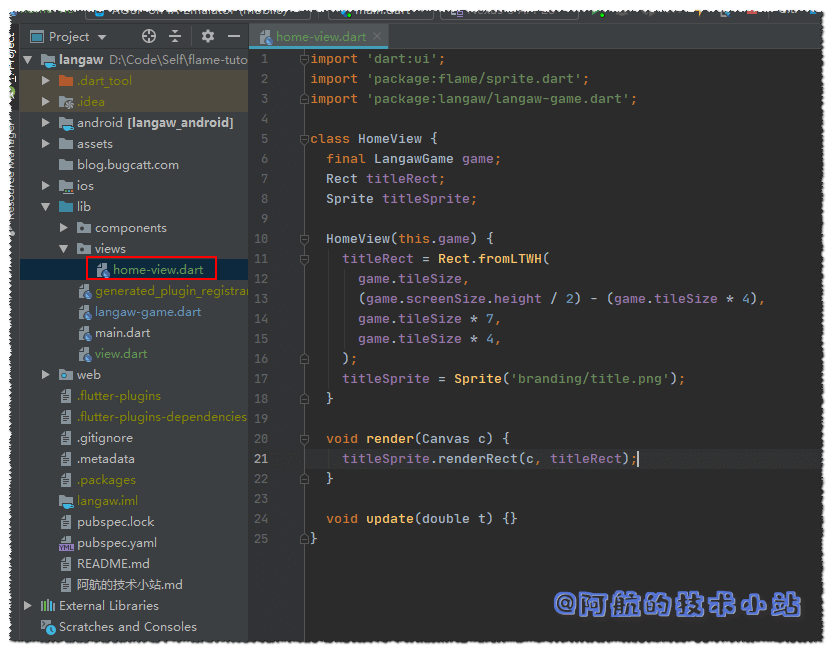
回到game类./lib/langaw-game.dart, 导入HomeView类:
import 'package:langaw/views/home-view.dart';
添加HomeView类型实例变量homeView:
HomeView homeView;
我们需要在确定屏幕尺寸后初始化此变量. 在initialize中, resize后添加:
homeView = HomeView(this);
game类代码截图:

最后, 我们希望将HomeView渲染在屏幕上. 因此在game类的render函数内部, 在render()底部调用HomeView:
if (activeView == View.home) homeView.render(canvas);
🟡 提示: 渲染的顺序和代码顺序一致. 我们先要背景, 然后是小飞蝇, 最终是标题. 这将确保标题被置顶.
💡 代码解析: 我们先判断当前界面是否为home, 如果是就渲染
homeView实例. 如果不是,render()就会跳过这行,homeView也不会被渲染.
🟢 运行游戏, 你应该会看到标题被渲染:
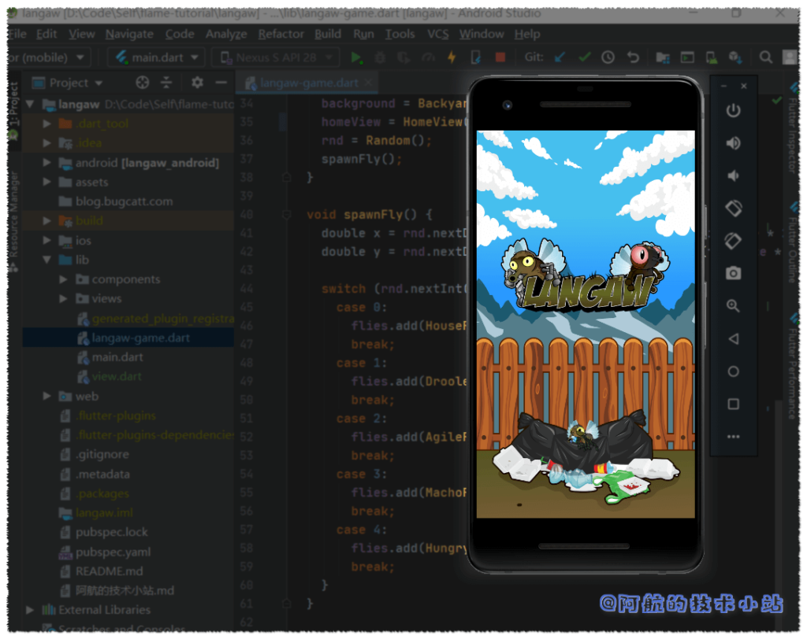
开始按钮component
当进入game界面时, 玩家仍然可以击落小飞蝇. 但这对游戏没什么影响. 就像输掉比赛后小飞蝇又会重新生成. 此外, 玩家击落小飞蝇暂时不会增加分数. 后面将会讨论评分系统.
所以如果想让游戏开始, 我们必须要有一个开始按钮. 首先让我们创建另一个component, 名为StartButton. 创建文件./lib/components/start-button.dart:
import 'dart:ui';
import 'package:flame/sprite.dart';
import 'package:langaw/langaw-game.dart';
class StartButton {
final LangawGame game;
Rect rect;
Sprite sprite;
StartButton(this.game) {}
void render(Canvas c) {}
void update(double t) {}
void onTapDown() {}
}
💡 代码解析: 类的定义和其他的一样(包括最近创建的
HomeView). 这里需要额外关注的是onTapDown处理器. 这将包含"启动游戏"的代码.
进入构造函数, 初始化rect和sprite变量:
rect = Rect.fromLTWH(
game.tileSize * 1.5,
(game.screenSize.height * .75) - (game.tileSize * 1.5),
game.tileSize * 6,
game.tileSize * 3,
);
sprite = Sprite('ui/start-button.png');
💡 代码解析: 这几乎和
HomeView的构造函数一样.最主要的区别是, 除了尺寸为
6 × 3个区块, 还有Left和Top的偏移量.开始按钮的宽度是
6个区块, 屏幕的总宽度是9个区块, 那么剩下3个区块, 两侧各剩下1.5个区块. 因此我们Left参数传入game.tileSize * 1.5.对于Top参数, 此计算将使按钮的垂直中心正好位于屏幕高度(从上至下)的四分之三(
0.75). 若你对此算法有疑问, 欢迎留言.
在进行初始化rect和sprite变量后. 我们需要在render()中通过下面的代码来渲染图像:
sprite.renderRect(c, rect);
现在的./lib/components/start-button.dart代码截图:
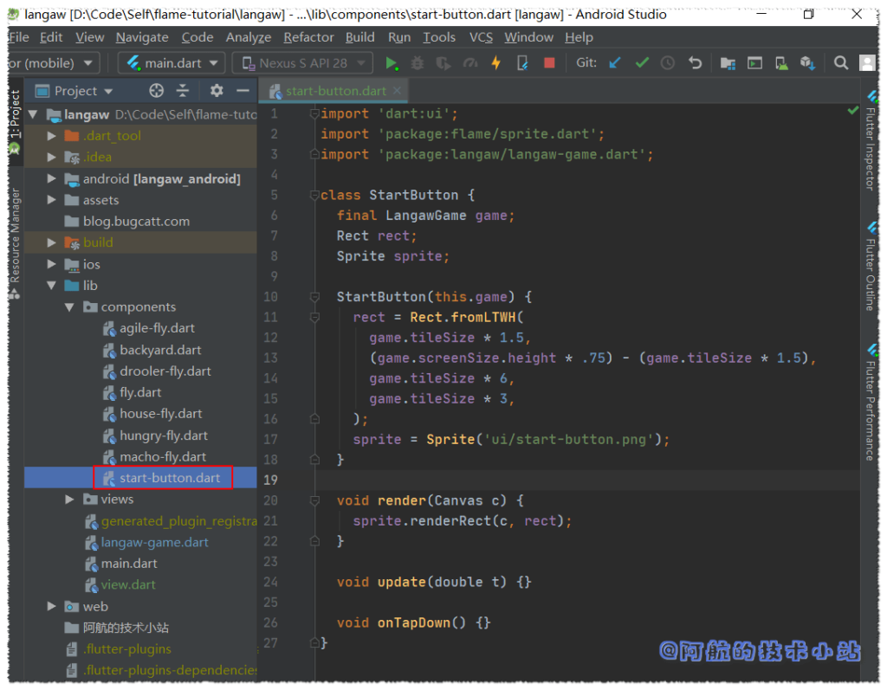
我们现在必须添加一个StartButton的component实例到game类中, 打开./lib/langaw-game.dart, 先导入:
import 'package:langaw/components/start-button.dart';
在其他实例变量下面添加:
StartButton startButton;
在确定屏幕尺寸后, 使用新的StartButton初始化startButton变量:
startButton = StartButton(this);
将下面的代码块添加至render():
if (activeView == View.home || activeView == View.lost) {
startButton.render(canvas);
}
💡 代码解析: 聪明的你应该已经注意到了, 导入类、 创建该类的实例并将其存储在实例变量中, 并最终渲染该类这一套流程需要上面的四块代码. 这是渲染component的通用"套路”!🤩🤩🤩🤩
开始按钮将会同时在home界面和"you lost"界面被渲染. 这样, 玩家就可以从这两个界面开始游戏或重玩游戏.
🟢 运行游戏, 现在应该可以看到开始按钮了!
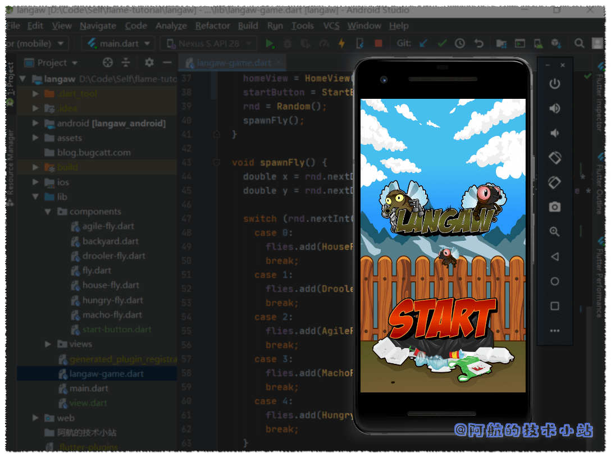
绑定"开始"按钮点击
接下来我们需要让开始按钮响应玩家的点击.
首先, 我们需要确保点击不会穿过对象. 比如点击了"开始"按钮, 同一位置的小飞蝇不会收到点击事件.
在我们的game类的onTapDown的处理器中, 我们将创建一个变量, 该变量将保存是否调用了点击处理器.
让我们将此变量称为isHandled. 我们在onTapDown处理器的开头创建并将其默认值设置为false.
bool isHandled = false;
在检查点击是否击中component范围内前, 我们先要检查isHandled的值是否仍为false, 为false才会调用component的点击处理器.
if (!isHandled && startButton.rect.contains(d.globalPosition)) {
if (activeView == View.home || activeView == View.lost) {
startButton.onTapDown();
isHandled = true;
}
}
💡 代码解析: 首先, 检查
isHandled, 确保点击事件未被处理过. 该判断还包含点击位置是否在startButton的rect内部. 如果判断通过, 再次判断玩家当前是否在home界面或lost（失败）界面.只有满足上述所有条件, game才会调用开始按钮的
onTapDown处理器. 变量isHandled被重新赋值为true, 以便后面代码知道点击事件已被处理.
🟡 提示: 所有这些条件其实可以放在同一行
if内进行判断, 但是为了可读性需要进行拆分. 实际上这么写代码非常丑…😑😑😑😑
下一步我们要使用isHandled判断来包裹当前的小飞蝇点击处理器:
if (!isHandled) {
flies.forEach((Fly fly) {
if (fly.flyRect.contains(d.globalPosition)) {
fly.onTapDown();
isHandled = true;
}
});
}
💡 代码解析: 它基本上与我们上次的代码块相同, 只有两处不同. 第一个是它被
if(isHandled)所包住, 这样使代码块只有在点击事件还没有被处理时才允许(本例中通过start按钮, 因它是上面唯一的处理器).第二个是若至少有一只小飞蝇被击中, 则将isHandled变量改为true.
🟡 提示: 处理点击事件时, 首先检查最上面的对象. 这个与渲染的顺序截然相反. 我们应该检查最底层(首先渲染的一层)对象是否被点击. 因此, 我们首先检查最上面的对象(最后渲染的一层)的点击事件.
onTapDown处理器代码截图:
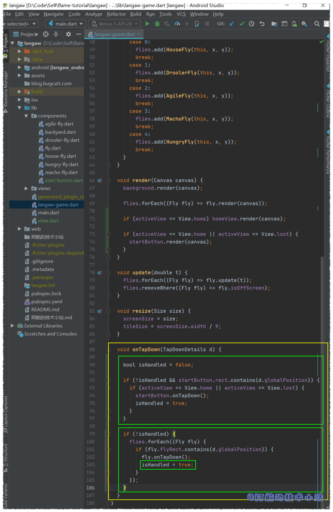
现在我们需要返回开始按钮文件(./lib/components/start-button.dart)
并编写可以处理实际点击的代码.
当调用开始按钮的onTapHandler时, 我们需要将游戏的activeView值设为View.playing. 因此, 我们需要导入View枚举类:
import 'package:langaw/view.dart';
在onTapHandler()中, 以下代码行将game的activeView设为正确的值:
game.activeView = View.playing;
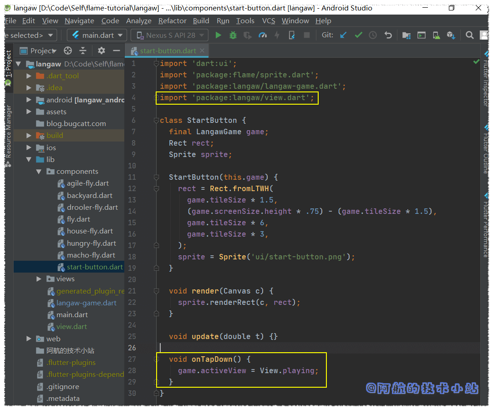
🟢 运行游戏, 测试开始游戏按钮:
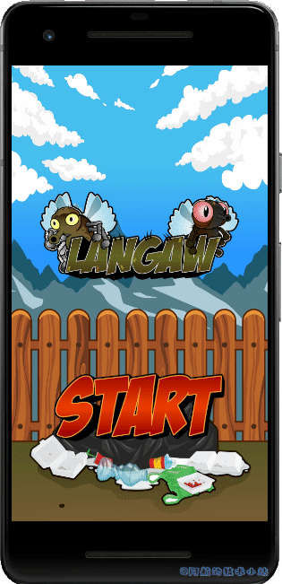
游戏失败条件
在我们创建了you lost界面前, 先来讨论下玩家怎么才会输掉游戏. 有两个条件: 第一个是玩家打偏了(未击中小飞蝇). 目前我们只来处理这种情况. 下一章会来处理第二个条件以及得分系统.
若要检查是否打偏, 我们需要创建另一个布尔类型的变量, 当小飞蝇被击中时, 该变量将会作为标识. 此变量将在循环小飞蝇前定义, 便于判断命中.
打开./lib/langaw-game.dart并将以下变量声明放在onTapDown处理器中, 循环小飞蝇前:
bool didHitAFly = false;
循环小飞蝇时, 将以下行放入if块中, 以测试点击是否成功. 最好在将isHandled复制为true前后:
didHitAFly = true;
然后在forEach循环后, 我们将判断当前是否在playing界面以及点击是否击中了小飞蝇:
if (activeView == View.playing && !didHitAFly) {
activeView = View.lost;
}
💡 代码解析: 在
if中, 我们判断两件事. 第一个是当前是否在playing界面, 因为如果我们没在玩游戏就没有输赢的概念🤣🤣🤣. 另一个就是判断是否击中了小飞蝇.若同时满足这两个条件, 则将
activeView的值设为View.lost, 该值对应you lost界面.
现在的onTapDown处理器截图(附注释):
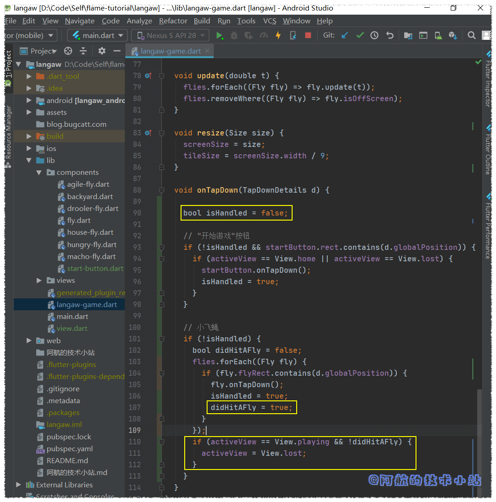
🟢 运行游戏, 若输掉游戏(打偏), 会显示开始按钮. 若你还记得render函数, “开始游戏"按钮只会在主界面和you lost界面出现:
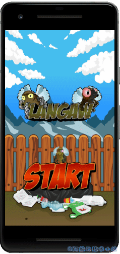
因为标题不会在输掉游戏后显示, 你可以通过此判断代码的正确性!🤓
you lost(游戏失败) 界面
最后一个界面几乎和主界面一模一样. 唯一的区别就是我们显示的图片不同.
在./lib/views创建界面文件lost-view.dart:
import 'dart:ui';
import 'package:flame/sprite.dart';
import 'package:langaw/langaw-game.dart';
class LostView {
final LangawGame game;
Rect rect;
Sprite sprite;
LostView(this.game) {
rect = Rect.fromLTWH(
game.tileSize,
(game.screenSize.height / 2) - (game.tileSize * 5),
game.tileSize * 7,
game.tileSize * 5,
);
sprite = Sprite('bg/lose-splash.png');
}
void render(Canvas c) {
sprite.renderRect(c, rect);
}
void update(double t) {}
}
💡 代码解析: 如你所见, 几乎和home界面一模一样. 区别在于
Sprite所加载的图像文件的文件名和图像的高度是5个区块.
就像home界面一样, 我们需要回到./lib/langaw-game.dart, 创建LostView类实例, 然后进行渲染.
导入游戏失败界面:
import 'package:langaw/views/lost-view.dart';
创建实例变量:
LostView lostView;
为lostView实例化一个LostView对象, 并将其分配至initialize()中, 确定屏幕尺寸后:
lostView = LostView(this);
之后在render()中进行渲染:
if (activeView == View.lost) lostView.render(canvas);
💡 代码解析: 类似的, 这些代码块是将component或界面添加至game类的标配, 通用套路.
代码截图:
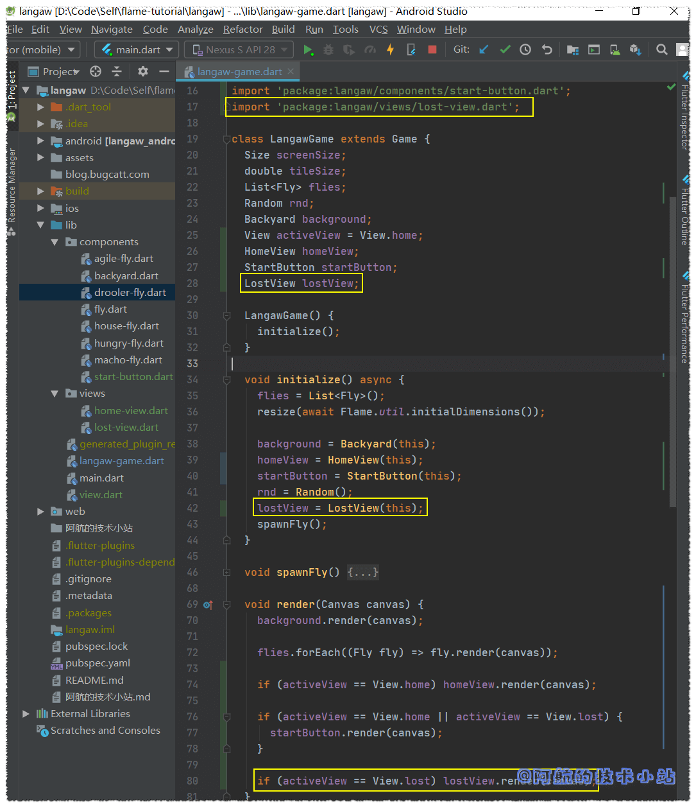
🟢 运行游戏, 点击开始按钮, 再打偏, 应该会看到you lost界面出现:
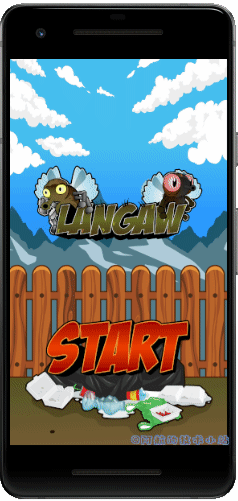
第三步: 重构小飞蝇生成控制器
在上一部分的结尾, 我已经提到了游戏中有bug存在. 其中一个就是小飞蝇的生成方式, 有两方面:
技术层面, 使用forEach遍历集合时, 代码不应修改list(也就是添加或删除list中的项目).
实际上, 这其实不能算是传统意义的bug, 我们要直接换掉它的逻辑😅😅😅
小飞蝇的生成应该基于时间, 而不是玩家的点击!
小飞蝇生成器controller
我们为此创建一个小飞蝇生成器controller. 我们最开始提到过, controller只是一个没有位置和图像的component.
在./lib中创建目录controllers. 然后在此目录中创建文件./lib/controllers/spawner.dart:
import 'package:langaw/langaw-game.dart';
class FlySpawner {
final LangawGame game;
FlySpawner(this.game) {}
void start() {}
void killAll() {}
void update(double t) {}
}
💡 代码解析: 你现在应该很熟悉结构了. 唯一的区别就是没有
render()函数. 因为此component(它是一个控制器)在屏幕上不会有图像展示.
像其他component和界面一样, 我们在名为game的final变量保留对LangawGame实例的引用, 并要求该变量的值作为构造函数的参数.
首先, 让我们编写killAll(), 先导入:
import 'package:langaw/components/fly.dart';
然后在killAll()内部, 添加此行:
game.flies.forEach((Fly fly) => fly.isDead = true);
💡 代码解析: 这样会循环game中所有的小飞蝇, 并将
true赋给isDead, 从而让现存的全部小飞蝇死掉.
再来准备一些常量. 将如下final实例变量添加至类:
final int maxSpawnInterval = 3000;
final int minSpawnInterval = 250;
final int intervalChange = 3;
final int maxFliesOnScreen = 7;
然后在它们下面, 添加两个变量:
int currentInterval;
int nextSpawn;
等下的代码解析中会解释常量的值以及变量的用途. 现在我们来编写start()函数. 每当玩家点击开始按钮时, 都会调用此函数.
void start() {
killAll();
currentInterval = maxSpawnInterval;
nextSpawn = DateTime.now().millisecondsSinceEpoch + currentInterval;
}
💡 代码解析: 从第一个常量
maxSpawnInterval开始. 此常量是生成小飞蝇的间隔时间上限. 游戏开始时, 将currentInterval设置为maxSpawnInterval的值. 为3000毫秒(也就是3秒).第二个常量
minSpawnInterval与其完全相反. 每次生成一个小飞蝇时, 都会减少currentInterval常量, 但只会降低到下限250毫秒(也就是1/4秒).第三个常量
intervalChange是每次生成小飞蝇时从currentInterval减少的数量. 因此, 从第3秒开始, 小飞蝇每次生成的速率就会越来越快, 最低至1/4秒. 就算有总数限制, 当玩家达到了这一步, 屏幕上将会有好多小飞蝇.最后一个常量
maxFilesOnScreen. 即使小飞蝇生成的速度极快, 但只要有7只小飞蝇还活着, 就不会生成更多.
currentInterval用于保存下一次生成时从当前时间添加的时间的量.
nextSpawn表示下一次生成的实际时间(时间戳).
在构造函数中, 添加如下行:
start();
game.spawnFly();
💡 代码解析: 第一行将计划在创建此控制器后的三秒中生成一只小飞蝇. 第二行仅用于生成小飞蝇.
这是按照顺序完成的, 因为如果我们先生成小飞蝇, 则start()将调用killAll(), 并且只会杀死第一只小飞蝇.
现在在update()函数内部, 我们将会拥有大量的生成逻辑. 将以下代码块放入update()中:
int nowTimestamp = DateTime.now().millisecondsSinceEpoch;
int livingFlies = 0;
game.flies.forEach((Fly fly) {
if (!fly.isDead) livingFlies += 1;
});
if (nowTimestamp >= nextSpawn && livingFlies < maxFliesOnScreen) {
game.spawnFly();
if (currentInterval > minSpawnInterval) {
currentInterval -= intervalChange;
currentInterval -= (currentInterval * .02).toInt();
}
nextSpawn = nowTimestamp + currentInterval;
}
💡 代码解析: 第一行代码存储当前时间戳.
下一块计算list中(
game.flies)存活的小飞蝇的数量. 代码只是循环遍历list, 若小飞蝇没死掉, 则将其添加至livingFlies.接下来, 我们有一个更大的代码块, 进入
if块, 判断当前时间是否超过nextSpawn值, 以及活着的小飞蝇数量是否小于maxFliesOnScreen常量.若满足条件, 我们将生成一只小飞蝇. 此后, 仅当
currentInterval大于最小间隔(minSpawnInterval)时, 我们才将interceptChange常量中的值减去currentInterval值的2%来减少currentInterval的值.最后, 我们使用当前时间来安排下一个的生成, 并在其中添加
currentInterval的值.
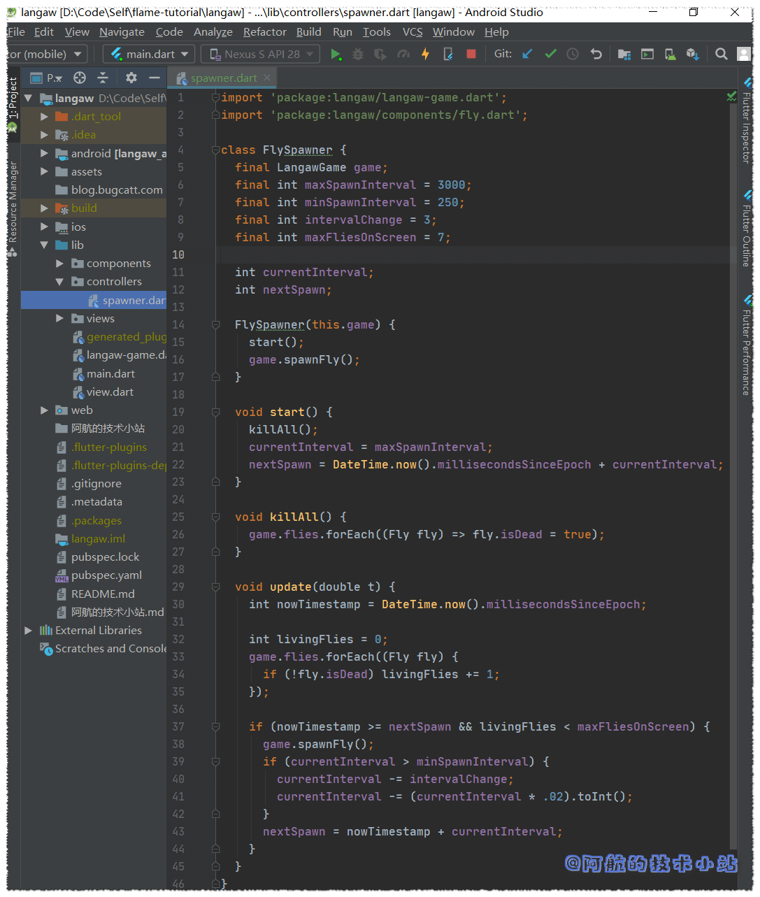
将controller集成至game类
若要将生成控制器集成至game类, 首先要删除旧的对spawnFly的调用.
在./lib/langaw-game.dart中, 删除initialize()中的以下行:
spawnFly();
在./lib/components/fly.dart中, 删除onTapDown处理器的以下行:
game.spawnFly();
这样应该会解决掉上面讨论的技术错误.
返回至./lib/langaw-game.dart, 我们创建了生成小飞蝇controller的实例并将其存储在实例变量中. 接下来的过程应该像是S.O.P.(Standard Operating Procedures, 标准作业程序. 你也可以理解为"例行公事”)
首先进行导入:
import 'package:langaw/controllers/spawner.dart';
然后创建实例变量:
FlySpawner spawner;
在initialize()中, 我们创建实例并将其存储在实例变量中. 在确定屏幕尺寸后添加以下行:
spawner = FlySpawner(this);
最后在update()内:
spawner.update(t);
在game loop中使用component和controller的主要区别在于, 我们调用的主要函数是update.这是因为渲染图形不是大多数controller的主要目的.
我们必须解决最后的难题: 调用生成器的start函数.
打开./lib/components/start-button.dart, 在onTapDown处理器中添加以下行:
game.spawner.start();
测试游戏!
🟢 运行游戏, 点击"开始游戏"按钮并输掉游戏. 现在你应该有了一个完整的游戏循环周期的游戏: 有了开始游戏, 游戏失败和重玩游戏(这个不是game loop, 别弄混啦!)
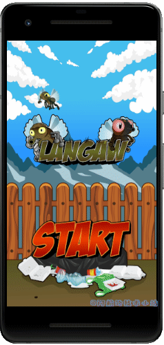
第四步: 对话框
我们的游戏进展一切顺利!🤩🤩现在我们需要让用户了解游戏并且知道游戏规则. 我们也需要添加"感谢”.
我们需要使用对话框完成此操作. 实际上在幕后, 对话框只是另一种"界面”.
从按钮开始
我们需要创建两个按钮component并把它们放在屏幕底部. 一个在左边, 另一个在右边.
在枚举View中新增两个枚举, 分别对应教程和感谢界面:
enum View {
home,
playing,
lost,
help,
credits
}
创建以下component:
./lib/components/help-button.dart
import 'dart:ui';
import 'package:flame/sprite.dart';
import 'package:langaw/langaw-game.dart';
import 'package:langaw/view.dart';
class HelpButton {
final LangawGame game;
Rect rect;
Sprite sprite;
HelpButton(this.game) {
rect = Rect.fromLTWH(
game.tileSize * .25,
game.screenSize.height - (game.tileSize * 1.25),
game.tileSize,
game.tileSize,
);
sprite = Sprite('ui/icon-help.png');
}
void render(Canvas c) {
sprite.renderRect(c, rect);
}
void onTapDown() {
game.activeView = View.help;
}
}
./lib/components/credits-button.dart
import 'dart:ui';
import 'package:flame/sprite.dart';
import 'package:langaw/langaw-game.dart';
import 'package:langaw/view.dart';
class CreditsButton {
final LangawGame game;
Rect rect;
Sprite sprite;
CreditsButton(this.game) {
rect = Rect.fromLTWH(
game.screenSize.width - (game.tileSize * 1.25),
game.screenSize.height - (game.tileSize * 1.25),
game.tileSize,
game.tileSize,
);
sprite = Sprite('ui/icon-credits.png');
}
void render(Canvas c) {
sprite.renderRect(c, rect);
}
void onTapDown() {
game.activeView = View.credits;
}
}
💡 代码解析: 又是熟悉的场景. 我们刚刚定义了相当标准的component. 这里要注意的是我们如何为每个按钮定义
Rect.我们希望help(教程)按钮位于屏幕的左下角, 这就是为什么将Left设置为从屏幕的左边起
game.tileSize * .25(区块大小的1/4)距离的原因. Top设置为屏幕高度减去game.tileSize * 1.25(区块大小的1又1/4). 这会将按钮的底部放置在距离屏幕底部正好1/4的位置.感谢按钮对Top和Left使用类似的算法. 除了Left使用屏幕的宽度外, 将按钮定位在屏幕的右下角.
两个按钮的尺寸均为一个区块的正方形.
这里要注意的另一件事是
onTapDown处理器. 调用这些处理器后, game类的activeView属性的值将设置为正确的值.View.help(教程对话框)和View.credits(感谢对话框).
现在, 我们需要通过导入两个按钮类文件, 将这些按钮添加至game类(./lib/langaw-game.dart)中:
import 'package:langaw/components/credits-button.dart';
import 'package:langaw/components/help-button.dart';
创建实例变量:
HelpButton helpButton;
CreditsButton creditsButton;
在initialize()中, 为刚创建的实例变量实例化一个教程和感谢按钮:
helpButton = HelpButton(this);
creditsButton = CreditsButton(this);
我们需要渲染这些按钮, 所以在render()中添加下面的代码块. 必须放在if中, 检查activeView是否设为View.home或View.lost(在渲染开始按钮的上方或下方):
helpButton.render(canvas);
creditsButton.render(canvas);
最后, 通过将以下代码块放入game类的onTapDown处理器中, 为onTapDown处理器添加处理:
// 教程按钮
if (!isHandled && helpButton.rect.contains(d.globalPosition)) {
if (activeView == View.home || activeView == View.lost) {
helpButton.onTapDown();
isHandled = true;
}
}
// 感谢按钮
if (!isHandled && creditsButton.rect.contains(d.globalPosition)) {
if (activeView == View.home || activeView == View.lost) {
creditsButton.onTapDown();
isHandled = true;
}
}
💡 代码解析: 检查三个条件:
1. 尚未处理过点击事件(
!isHandled)
2. 点击位置在按钮的rect范围内.
3.activeView必须设置为View.help或View.credits.
满足这些条件后, 我们将调用按钮的onTapDown处理器, 并将isHandled值变为true, 用以通知下个处理器该点击已被处理.
若现在运行游戏, 应该看到两个按钮了:
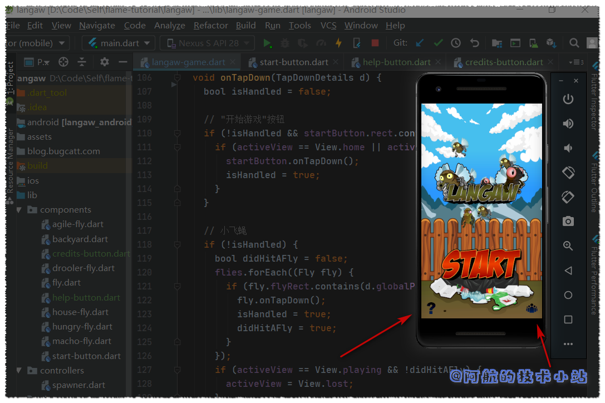
点击这些按钮将会展现对应的界面, 但现在这几个界面暂时不显示任何东西.
对话框
显示对话框, 我们将使用类似home和you lost界面的方式.
创建以下界面:
./lib/views/help-view.dart
import 'dart:ui';
import 'package:flame/sprite.dart';
import 'package:langaw/langaw-game.dart';
class HelpView {
final LangawGame game;
Rect rect;
Sprite sprite;
HelpView(this.game) {
rect = Rect.fromLTWH(
game.tileSize * .5,
(game.screenSize.height / 2) - (game.tileSize * 6),
game.tileSize * 8,
game.tileSize * 12,
);
sprite = Sprite('ui/dialog-help.png');
}
void render(Canvas c) {
sprite.renderRect(c, rect);
}
}
./lib/views/credits-view.dart
import 'dart:ui';
import 'package:flame/sprite.dart';
import 'package:langaw/langaw-game.dart';
class CreditsView {
final LangawGame game;
Rect rect;
Sprite sprite;
CreditsView(this.game) {
rect = Rect.fromLTWH(
game.tileSize * .5,
(game.screenSize.height / 2) - (game.tileSize * 6),
game.tileSize * 8,
game.tileSize * 12,
);
sprite = Sprite('ui/dialog-credits.png');
}
void render(Canvas c) {
sprite.renderRect(c, rect);
}
}
💡 代码解析: 如你所见, 这些代码和我们在本部分开头的代码十分相似.
两个对话框的大小均为
8 × 12个区块. 因此为了使对话框居中, 我们将Left参数值设为半个区块. Top参数值设为屏幕高度的一半减去半个区块.
距离胜利不远啦! 我们只需要将这些view添加到game类中即可. 轻车熟路, 先导入:
import 'package:langaw/views/help-view.dart';
import 'package:langaw/views/credits-view.dart';
创建view实例变量:
HelpView helpView;
CreditsView creditsView;
在initialize中, 实例化上面的变量:
helpView = HelpView(this);
creditsView = CreditsView(this);
然后在render函数中, 添加以下代码块. 记住渲染的顺序和代码顺序一致. 对话框需要渲染在顶部, 所以将它们放在末尾:
if (activeView == View.help) helpView.render(canvas);
if (activeView == View.credits) creditsView.render(canvas);
在onTapDown处理器中, 我们检查点击是否尚未被处理, 然后检查是否在教程或感谢界面中, 若为是, 将界面设置为home, 并将isHandled变量设为true, 保证后续代码不会执行:
if (!isHandled) {
if (activeView == View.help || activeView == View.credits) {
activeView = View.home;
isHandled = true;
}
}
game类过长不便截图, 这里展示./lib/langaw-game.dart的全部代码:
import 'dart:math';
import 'dart:ui';
import 'package:flame/flame.dart';
import 'package:flame/game.dart';
import 'package:flutter/gestures.dart';
import 'package:langaw/components/agile-fly.dart';
import 'package:langaw/components/backyard.dart';
import 'package:langaw/components/credits-button.dart';
import 'package:langaw/components/drooler-fly.dart';
import 'package:langaw/components/fly.dart';
import 'package:langaw/components/help-button.dart';
import 'package:langaw/components/house-fly.dart';
import 'package:langaw/components/hungry-fly.dart';
import 'package:langaw/components/macho-fly.dart';
import 'package:langaw/components/start-button.dart';
import 'package:langaw/controllers/spawner.dart';
import 'package:langaw/view.dart';
import 'package:langaw/views/home-view.dart';
import 'package:langaw/views/lost-view.dart';
import 'package:langaw/views/help-view.dart';
import 'package:langaw/views/credits-view.dart';
class LangawGame extends Game {
Size screenSize;
double tileSize;
List flies;
Random rnd;
Backyard background;
View activeView = View.home;
HomeView homeView;
StartButton startButton;
LostView lostView;
FlySpawner spawner;
HelpButton helpButton;
CreditsButton creditsButton;
HelpView helpView;
CreditsView creditsView;
LangawGame() {
initialize();
}
void initialize() async {
flies = List();
resize(await Flame.util.initialDimensions());
background = Backyard(this);
homeView = HomeView(this);
startButton = StartButton(this);
rnd = Random();
lostView = LostView(this);
spawner = FlySpawner(this);
helpButton = HelpButton(this);
creditsButton = CreditsButton(this);
helpView = HelpView(this);
creditsView = CreditsView(this);
}
void spawnFly() {
double x = rnd.nextDouble() * (screenSize.width - (tileSize * 2.025));
double y = rnd.nextDouble() * (screenSize.height - (tileSize * 2.025));
switch (rnd.nextInt(5)) {
case 0:
flies.add(HouseFly(this, x, y));
break;
case 1:
flies.add(DroolerFly(this, x, y));
break;
case 2:
flies.add(AgileFly(this, x, y));
break;
case 3:
flies.add(MachoFly(this, x, y));
break;
case 4:
flies.add(HungryFly(this, x, y));
break;
}
}
void render(Canvas canvas) {
background.render(canvas);
flies.forEach((Fly fly) => fly.render(canvas));
if (activeView == View.home) homeView.render(canvas);
if (activeView == View.home || activeView == View.lost) {
startButton.render(canvas);
helpButton.render(canvas);
creditsButton.render(canvas);
}
if (activeView == View.lost) lostView.render(canvas);
if (activeView == View.help) helpView.render(canvas);
if (activeView == View.credits) creditsView.render(canvas);
}
void update(double t) {
flies.forEach((Fly fly) => fly.update(t));
flies.removeWhere((Fly fly) => fly.isOffScreen);
spawner.update(t);
}
void resize(Size size) {
screenSize = size;
tileSize = screenSize.width / 9;
}
void onTapDown(TapDownDetails d) {
bool isHandled = false;
// 弹窗
if (!isHandled) {
if (activeView == View.help || activeView == View.credits) {
activeView = View.home;
isHandled = true;
}
}
// "开始游戏"按钮
if (!isHandled && startButton.rect.contains(d.globalPosition)) {
if (activeView == View.home || activeView == View.lost) {
startButton.onTapDown();
isHandled = true;
}
}
// 小飞蝇
if (!isHandled) {
bool didHitAFly = false;
flies.forEach((Fly fly) {
if (fly.flyRect.contains(d.globalPosition)) {
fly.onTapDown();
isHandled = true;
didHitAFly = true;
}
});
if (activeView == View.playing && !didHitAFly) {
activeView = View.lost;
}
}
// 教程按钮
if (!isHandled && helpButton.rect.contains(d.globalPosition)) {
if (activeView == View.home || activeView == View.lost) {
helpButton.onTapDown();
isHandled = true;
}
}
// 感谢按钮
if (!isHandled && creditsButton.rect.contains(d.globalPosition)) {
if (activeView == View.home || activeView == View.lost) {
creditsButton.onTapDown();
isHandled = true;
}
}
}
}
🟢 运行游戏, 看看效果:
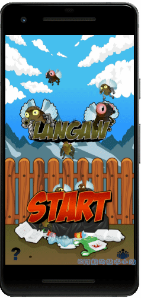
测试游戏!
运行你的游戏, 看看我们的成果吧!
结语
又经过了一个干货满满的教程, 我们随着游戏的进展, 通过几个小步骤使游戏变得更加完整了.
如果你出现了不懂的地方, 不要犹豫, 欢迎在评论区留言! 也欢迎你加入我的Flame交流群(QQ)
下一步会干什么?
在下一章,我们将会处理一些新颖的东西.
音乐和音效.
不仅如此, 我们还会添加得分机制, 一个简单的游戏积分. 当然, 还会记录最高分.
感谢
- 本篇文章参考原作《Views and Dialog Boxes Tutorial – Step by Step with Flame and Flutter (Part 3 of 5)》 .
- flame github仓库地址
- pub.dev 官方网址
- Impart 发现了文章问题